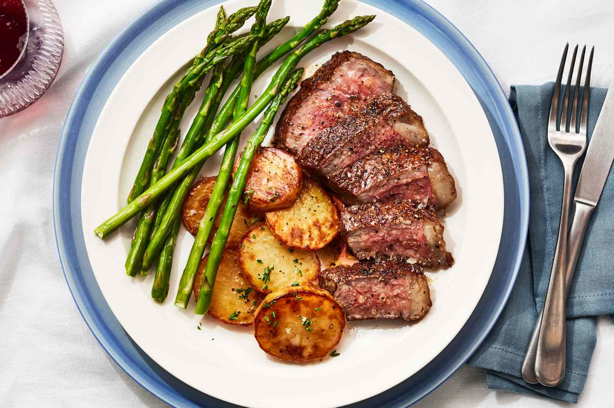

Classic-Steak

The staple for the hungry individual
Ingredients
- Sandwhich Steaks
- Potatoes
- Asparagus
- Butter
- Salt
- Pepper
Instructions
- Lay steaks flat on chopping board
- Season both sides with salt & pepper
- Wash and slice Potatoes into quarters
- Wash Asparagus
- Place Asparagus and Potatoes on oven tray
- Set oven to 180 degrees and leave for 20 minutes
- Heat up pan on stove with max heat
- Add butter when warm
- Move butter around pan to coat base
- Lay steaks into pan evenly spaced apart
- Flip steaks after approximately 3-4 minutes
- Remove Tray from oven and allow to cool
- Remove pan from heat and serve steaks
- Garnish plates with Asparagus and Potatoes
- Add salt and pepper to taste
Back to Recipes